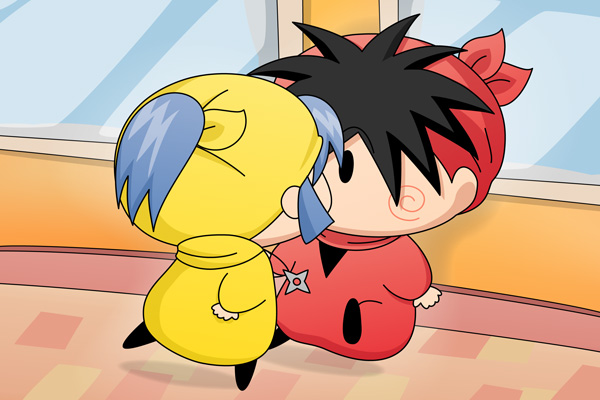

ヤシチ「！！」
ヤマネがヤシチの元へ近づくやいなや、ヤマネの唇がヤシチの唇と重なりました。
ヤシチは少々後ずさりするものの、あまりにも突然の出来事のために驚いた表情をする間も無く、視線はどこか違う世界へと向いています。
時間にしておよそ３秒くらいでしょうか。
二人の唇がぱっと離れました。
ヤシチ「・・・」
ヤマネ（ヤシチ兄様のキスの味・・・。
とっても甘いでございます。
まるでヤシチ兄様の大好きなかりんとうの味・・・）
そう、ヤシチは数分前までかりんとうを食べていたのでした！
ヤマネ「うふふのふ～。何だか気分が良くなって
きたでございます。ひっく・・・」
前々回に続き、また多方面から怒られそうな絵を描いてしまいました。特に今回はヤシチファンとヤマネファンを敵に回してしまったような…。あくまで恋の一例ということで広い心でご覧くださいませ(^^;。ちなみに今回の絵を描くことこそが、ヤマネちゃんストーリーを始めるにあたっての当初からの目的となっておりました。
ラストのオチはもうお約束過ぎですね。あまりにお約束過ぎてオチという感じもしませんが、ストーリーはもう少しだけ続きますのでどうかお付き合いくださいね。
(2010/2/7)